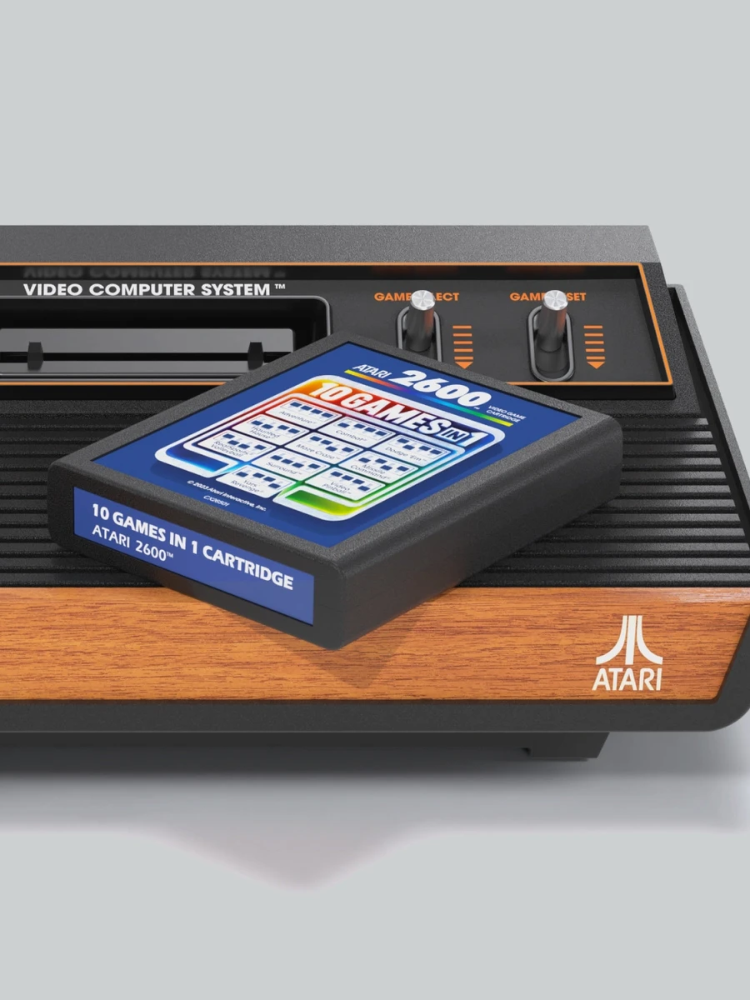
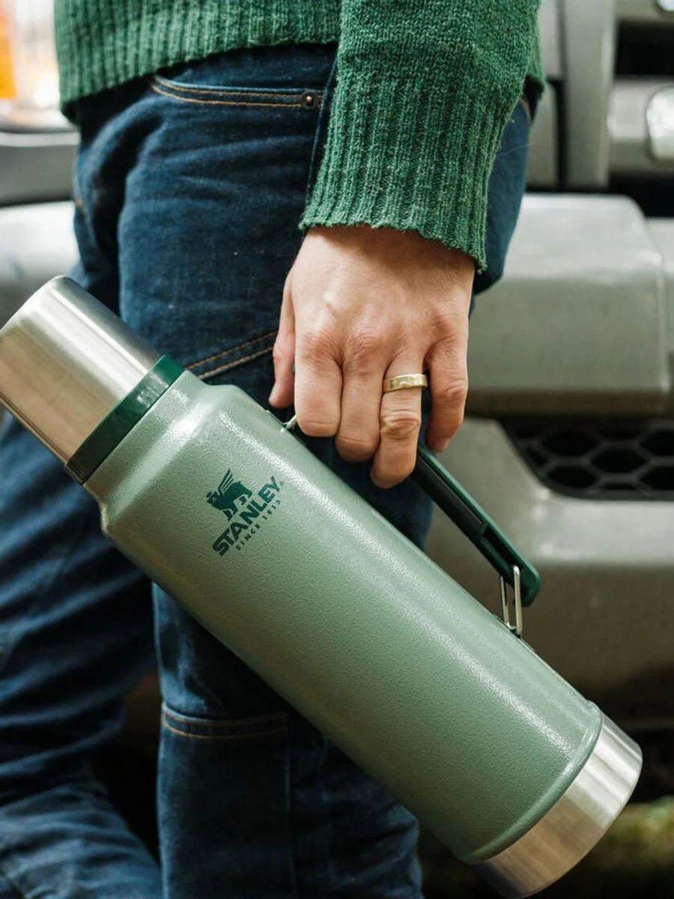

delegated
back to you
+1
Nosto Partner Day
TORONTO · 2026
TORONTO · 2026

Don't automate tasks.
Rebuild the system.
How we rebuilt Notify Me! around AI agents, and what it taught us about the agentic era.
Hamidreza · CEO, Notify Me!
The reality check
Why “AI-Powered” Isn’t Enough
Your productivity improves dramatically
Everyone seems to be working faster
Because being AI-powered isn’t enough anymore.
Your organization has to become AI-native.
Your people might be AI‑powered, but
Your organization has to be AI‑native.
The problem
Why the speed disappears
We found several causes. These were the three biggest.
- 01Humans are the bottleneck
- 02Uneven AI maturity
- 03Agents still make mistakes
The problem
Who's talking
Hamidreza Zahedi
CEO at Notify Me!, building it for almost four years.
PART 01
How we got here
Part 01 · How we got here
2025 · the AI pivot
First, we stopped everything for a week.
Normal work on hold. The whole company pointed at one thing.
Read about it
What’s actually possible now.
Watch & learn
Talks, demos, deep dives.
Get hands-on
Break the tools, see what sticks.
Share it back
Teach the team what you found.
Demo Day
Ship something real
An AI workflow, an agent, or anything you built.
ChatGPTLearn, draft, prototype
n8nWire it into a workflow
weekly-feature-request-digest
Executed
ScheduleEvery Monday
CannyFeature requests
MergeCombine sources
OpenAISummarize the themes
Part 01
2025 · the reorg
That experience led to a major reorg.
Company structure · early 2025
38%Technical & Product
Technical & Product38%
Business, Board & Insights21%
Customer Care20%
Staff & Culture13%
Marketing8%
One team · four products
Specialists, shared
Four teams · four products
Frontend
Backend
Product
Design
Frontend
Backend
… and the rest of the team
Full-stack Engineer
Product Designer
Full-stack Engineer
Product Designer
Full-stack Engineer
Product Designer
Full-stack Engineer
Product Designer
Part 01
The unexpected problem
Still wasn’t the outcome we were hoping for.
ENG
PROD
MKTG
Teams adopted AI at very different speeds
The agents still made mistakes
Part 01
The reframe
The problem was the process itself.
Before AI
Research
Product Requirement Document
Design
Coding
Quality Assurance
Documentation
Launch
With AI
Research
Product Requirement Document
Design
Coding
Quality Assurance
Documentation
Launch
Every stage still waits on a human. That wait never got faster.
Part 01
PART 02
So we built a factory
internal name · "OusMous"
Part 02 · The factory
Early 2026
How we turned product development into a factory.
AI had become dramatically more capable. So we rebuilt the process as one system.
Feature request
One input, any size
Human oversee
Feature shipped
Live on the product
Agents collaborate and improve each other’s work
Part 02
Introducing
OusMous
A software factory. Its job is simple: build software products.
Agents own every stage.
The loop is closed.
The knowledge compounds.
- 01Research
- 02Design
- 03Engineering
- 04Production
- 05Testing
- 06Delivery & Learning
Research
Design
Engineering
Production
Testing
Delivery & Learning
Knowledge
Research stations
- Market Research
- PRD Product Requirements Document
Design stations
- UI/UX Design
- Design Review
- Design Handoff
Engineering stations
- Definition of Done
- DoD Review
- Planning
- Plan Review
Production stations
- Coding
- Code Review
Testing stations
- Technical QA
- Product QA
- Visual QA
Delivery & Learning stations
- Release
- Release Announcement
- Documentation
- Learning
The 4 core components
Inside each station
Agent
design-agent.md
Skills
- polaris-guidelines.md
- ux-ui-designer.md
- design-playground.md
Hooks
- polaris-guard.md
Review agents
- velocity-guard.md
- states-guard.md
Part 02
Live walkthrough · the factory builds Hueshi, our in-app AI copilot
From customer signal to shipped feature.
Hooshang — NOTIFY-ME [SSH: ousmousa]
agent · OusMous
9
Explorer···
TerminalProblemsOutputPorts
Claude Code
running
>
Ask Claude to build the next feature…
claude-opus-4.6
context 38%
main*
orchestrator idle
SSH: ousmousa
UTF-8
Markdown
Part 02 · Live build
PART 03
Four core components
All coordinated by one Orchestrator.
Part 03 · The components
The orchestrator
A decision engine.
Not a person, not one agent.
It answers the questions that hold the whole line together.
What kind of request entered the system?
Which workflow should run?
Which skills & agents, in what order?
Is the output actually good enough to move on?
If a review or QA check fails, who fixes it?
Part 03
Part 04 · what it delivered
The bottom line.
The bottlenecks between research, design and engineering: gone.
01Operational
Lead time
6.3d→3.2d
almost 50% faster
Releases
10→26
per month
Reaching customers
months→<7d
02Business
Churn
−30%
down to ~2% / month
Free to paid
+20%
now 23%
03The economics
We spend
~CAD$20K
per month, on AI
Tokens burned
3to10×
vs a single-agent workflow
Because what it replaced cost far more.
Bottlenecks
Teams falling out of sync
Rework
Endless QA cycles
Countless hours of manual review
Part 04
"So where's your moat?"
It was never the agents.
It's the compounding.
Commodity · the tools'
Skills · Agents · Hooks
Capabilities of Claude Code. Anyone can get them.
→
What we built
The workflow
Autonomy inside your process, quality gates, approvals — and what “done” means.
→
Can't be copied
Compounding experience
Every feature leaves a better rule, eval & safeguard.
The workflow is easy to copy. Everything it has learned isn't — that's the moat.
Part 04
What changed
The roles didn't disappear. They shifted.
01People did the work.→AI agents do the work.
02Managers coordinated it.→The system coordinates it.
03Systems recorded what happened.→People lead.
Conclusion
Beyond product · every department
We didn’t stop at product. We ran the same model everywhere.
OusMous
Product Development
Engineering
Jamshid
Business Analysis
Success Metrics
Growth Strategy
Hueshi
Customer Analysis
Segmentation
Customer Success Insights
We didn’t replace our departments with AI. We embedded AI into every department.
Conclusion
AI-powered ≠ AI-native
Being AI-powered isn’t enough anymore.
Your people
are AI-native.
are faster.
Your organization
isn’t.
isn’t.
Conclusion
Don't automate tasks.
Rebuild the system.
The winners of the agentic era won't build the best agents.
They'll build the best learning workflows.
Notify Me!
The company
We help merchants recapture lost revenue.
A Shopify & BigCommerce app, live since 2020. Our mission is simple: recapture the revenue merchants would otherwise lose, more of it than anyone else.
35K+Merchants
8K+Paying customers
2020Live since
4.9
★★★★★
3,383 reviews
#1 on the Shopify App Store
Notify Me!
Five core products · one platform
Together, they capture revenue that would otherwise be lost.
Never lose a sale to “Sold out” again
Maison Stella
Suzie Knit Top
$128.00
Sold out
Notify me when available
Get notified when it’s back
lily@studio.com
+1 (555) 240-1180
Email
SMS
Push
WhatsApp
Notify me
9:41
Tuesday, April 18
Notify Me!now
Suzie Knit Top is back in stock. Shop now →
Order placed!
Suzie Knit Top is on its way.
Keep selling while you wait on stock
Lune Atelier
Bloom Print Dress
$168.00
Ships by Apr 18
50% deposit today
Pre-order
Checkout
Bloom Print Dress
$168.00
50% depositDue today
$84.00
Mastercard ···· 4242
Saved
Place preorder
Preorder confirmed
Arrives by Apr 18
A little urgency goes a long way

Atari 2600+ Console $129.99 Only 3 left in stock Add to cartLet shoppers save now, buy later
Stanley

Classic Legendary Bottle $50.00 Add to cart Add to wishlist
FromStanley 1913
Toyou@email.com
SubjectPrice drop on your wishlist
Your wishlisted item is on sale
Classic Legendary Bottle
$50.00
$40.00
−20%
Buy it now
Order placed!
Turn store data into decisions
Hueshi · Beta
Analyze, set up,
and take action Your Notify Me! copilot
and take action Your Notify Me! copilot
What should I restock first? →
Where am I losing sales? →
Ask about your store…
Ask Hueshi
BETA
copilot
Which products should I restock first?
Three SKUs drive 61% of your back-in-stock demand this month.
Based on Restock demand
Top 3 SKUs · 61% of unmet demand
Restock these 3 first
Recovers ~$18k in lost sales
Apply
Applied
Undo
Let's rebuild it together.
If this is the transition you're navigating, or you'd just like to keep talking, I'd love to connect.
Hamidreza · Notify Me! · notify-me.io
Thank you